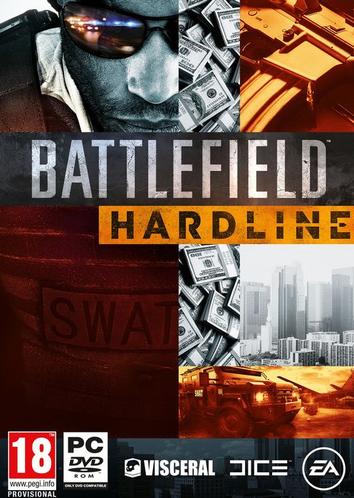

Battlefield Hardline 35 gb
Género: FPS, crímenes
Battlefield Hardline es un videojuego de acción en primera persona lanzado el
18 de marzo de 2015, desarrollado por Visceral Games y EA Digital Illusions
CE, y distribuido por Electronic Arts. Es el primer juego de la serie que tiene
como temática principal el crimen policiaco.